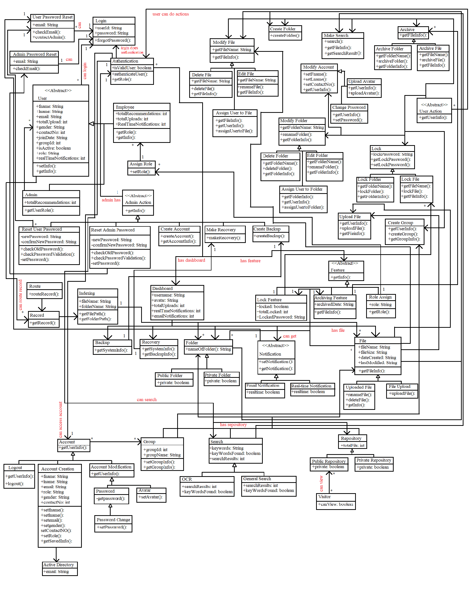

1. Introduction
1.1 Purpose
This software design specification is made with the purpose of laying out the software architecture and design of the Document Digitization Service in detail with all the data, architectural, interface and component level designs. The document will render the developers an insight in meeting client’s needs effectively and efficiently. Moreover the document facilitates communication and understanding of the system by providing several views of the system design.
1.2 Document Conventions
The document maintained the typical document conventions with the main topics being bold and have a font size of 30 then sub-topics are bold also with the smaller font size of 20 than the main topic. The sub topics are numbered with main topic number as a prefix such as for 1st main topic the sub topics are prefixes as 1.1,1.2,1.3 and so on.
1.3. Intended Audience and Reading Suggestions
The intended audience of this software design specification or SDS are the project managers and developers of the document digitization service as it will serve as the instruction for all the development requirements. There will be several technical terminologies and diagrams so it would be wise for the readers to gain the knowledge about the topics that will be use here in sds.
2 Architectural Design Pattern
The ‘Document Digitization Service’ application, both mobile app and web app, will be using the Model View Template (MVT) software design architecture. The entire design has broke down into three components and each component has a specific purpose:
- Model: Model acts as an interface for our data and is basically the logical structure behind the entire web application which is represented by a database here we will be using MySql.
- View: View executes the business logic and interacts with the Model and renders the template. It accepts HTTP requests and then returns HTTP responses.
- Templates: Templates are used to specify a structure for an output. Data can be populated in a template using placeholders. It defines how the data is presented. An example is a Generic list view that we can use to display a set of records from the database
Advantages of using MVT:
- Less coupled.
- Suitable for small to large-scale applications.
- Easy to Modify.
MVT Architecture Pattern
3 Description of Design Components
The entire design can be broken down into two components one is server side and another is client side.
3.1 Server Side:
The whole server will taken care of the following ways:
-
Security System: The users will have all the security measurements so that they can safely use our system
without being exposed to anyone so much easily. In addition they can secure their file and folder by the lock feature
so that without a password
the user himself/herself can’t access his/her locked file and folders. In addition the system
has some policy for brute force attacks.
- If a user remains idle for 15 minutes then the user will be automatically logged out.
- After consecutive 3 failed login attempts the system will block the account of the user.
- Reset password would be done by the assigned administrator using the administration panel.
- Only alphanumeric keys are allowed in the username and password field.
- Backup System: The administrators can take the backup of the system so that any unexpected situation can be handled without losing the data.
- Recovery System: From the backuped system the system can be recover at any time.
- Maintenance and Technical Support: The system would have a better Maintenance and Technical Support policy.
- Capabilities: The system would be capable of uploading a sing and bulk files and can store approximately 3.5 million files
-
Notification management: The system would be able to send notification to the user for any
kind of modification, update and request access with following 2 condition as well:
- The system should be capable to send email notification in every routed task.
- The system should be capable view real-time notifications in the dashboard
-
Reports Management:
- The system should be capable of counting all the uploaded records by folder or user.
- The system should be capable of counting all the pages in every record uploaded.
-
Search and Retrieval Management:
- The system should be capable of searching data such as index, file name, date, author name, uploader name, document type and content of the scanned document.
- The system should have an advanced content search that can search optical character recognition (ocr) of the scanned documents.
- The system should have a filtering in search result to easily track the documents.
3.2 Client Side:
By this the client should be able to visit through different platforms like web and android.but whenever the client visits they see the same things and same functionalities.
- Login: At first the user sees the login page.where they have to put their username and password .if the information matches with the database then see her own dashboard.if user has not been registered yet he will see the message that you are not registered yet..And the user can also log in through Googl
- Registration: The registration of a user can only be done by the administrator.


4. High level component Design

5. Class Diagrams
5.1 Detailed Class Diagram

5.2 Detailed Class Description
The following tables explain the type, purpose, function(s), description of each of the classes of Document Digitization application:
Detailed Class Diagram(s): user
| Class Name | User |
|---|---|
| Type | Abstract class |
| purpose | This class contains the information of users. |
| Function | It controls each user's profile implementation.example: +fname: String,+lname: String,+email: String,+totalUpload: int, +gender: String,+contactNo: int,+getInfo: etc. |
| Description | Employees and Admin are the subordinates of this class. |
Detailed Class Diagram(s):Authentication
| Class Name | Authentication |
|---|---|
| type | Associated Class |
| purpose | the process or action of verifying the identity of a user or process.the implementation of this class will grant user access to the app for further usability |
| function | It controls each account varifications +isValidUser: boolean,+authenticateUser():,+getRole(): |
| Description |
authenticate server where the information is compared with all the user credentials on file. When a match is found, the system will authenticate users and grant them access to their accounts. |
Detailed Class Diagram(s):Admin Action
| Class name | admin action |
|---|---|
| type | Abstract Class |
| purpose | admin can authorize the employees accounts.they have accses to create any account ,delete any user account and make recovery to the user account. |
| function | It controls following functions :+getInfo(),+createAccount(),+getAccountInfo(), +makeRecovery(): |
| Description | This class has Make Recovery,Create Account,create backup,assign user role,reset user password named sub classes. |
Detailed Class Diagram(s):features
| Class Name | Feature |
|---|---|
| type | Abstract Class |
| purpose | This class characteristics, Archives function, contain primary source documents that have accumulated,lock features that keep safe important documents and controls assigned roles by the admin. |
| function | it supervise following functions :+locked: boolean,+totalLocked: int,+getarchiveFileInfo():,+getRole(): |
| Description | This class has lock feature ,archiving feature, various role of users abilities by admin |
Detailed Class Diagram(s):User action
| Class Name | User action |
|---|---|
| type | Abstract Class |
| purpose | user action is a task or workflow that a user can complete while processing a case. By choosing which actions are relevant to his case. in the website we have multiple actions the user can perfrom. |
| function | it supervises +getUserInfo(): and its subclass functions |
| Description | This class can perform these sub class actions: Modify File,Delete File,Edit File,Create Folder,Modify Folder,Lock Folder,Archive action, Upload File,Create Group,Modify Account,Search files |
Detailed Class Diagram(s):Notification
| Class Name | Notification |
|---|---|
| type | Abstract Class |
| purpose | it notifies when the admin assigns any work or group work to the user,reminder for uploading file,and communicate with other timely information from our app. |
| function |
Email Notification :+realtime: boolean Real-time Notification:+realtime: boolean |
| Description | Users can tap the notification to open your app or take an action directly from the notification.this class has two sub class real time notification and email access notification. |
Detailed Class Diagram(s):Folder
| Class Name | Folder |
|---|---|
| type | Super class |
| purpose | a virtual container within a digital file system, in which groups of files and other folders can be kept and organized. |
| function | This class comprises the data type :+nameOfFolder(): String |
| Description | This class has a Public Folder,a Private Folder subclass.public folder is shared with all users themselves.on the other hand private folder,shared with restricted users only.Added “master password” to prevent others from viewing/changing your rules |
Detailed Class Diagram(s):Search
| Class Name | Search |
|---|---|
| type | Super class |
| purpose | It helps users find what they need on the website. Add a customizable search box to our web pages and show fast, relevant results powered by this system. |
| function | This class will be implement the following data type :+keywords: String +keyWordsFound: boolean +searchResults: int |
| Description | This class implies OCR search and General search.optical character recognition, allows us to transform a scan or photograph of a letter or court filing into searchable, sortable text that we can search easily. |
Detailed Class Diagram(s):Account
| Class Name | Account |
|---|---|
| type | Super class |
| purpose | An account is a record in an accounting system that tracks the financial activities of a specific asset, the user implementation activities. |
| function | This class comprises the functions +getUserInfo(): also has subclass function :-getpassword():,+setPassword():,+setAvatar(): |
| Description | Account Description can be established for each unique activities combination.account class have account creation subclass,account modification subclass. |
Detailed Class Diagram(s): File
| Class Name | File |
|---|---|
| type | Super class |
| purpose | File is a free, secure tool that helps you find files faster, manage files easily, and share them offline with others. |
| function | This class will be implement the following functions : +getFileInfo(): and the data type are +fileName: String,+fileSize: String +dateCreated: String,+lastModified: String. |
| Description | It supports various types of features: quick search, moving, deleting, opening, and sharing files, as well as renaming, unzipping, and copy-paste.Files also recognizes multiple file formats, including music, videos, images, documents |
Detailed Class Diagram(s):Repository
| Class Name | Repository |
|---|---|
| type | Super class |
| purpose | There are two repositories called public and private repositories. So that these can be used publicly and privately. |
| function | This class will be implement the following data type: +private: boolean +private: boolean |
| Description | There should be a parent class called repository and two child classes called public repository and private repository. |
Detailed Class Diagram(s):Backup
| Class Name | Backup |
|---|---|
| type | Single Class |
| purpose | Backup restore uses accessibility services to improve deleted file or folder.Restore, Transfer ours Apps and Personal data, confidential file save to lose |
| function | This class contains +getSystemInfo(): functions. |
| Description | Backup feature Restore or transfer files of apps that are not frequently used to save storage of phone. Easiest Backup
Personal data for safety. iCloud Backup for data security. |
Detailed Class Diagram(s):Group
| Class Name | Group |
|---|---|
| type | Single Class |
| purpose | To do a specific work, members need to work grouply. So, the admin can create a group for that members and they can do the work group wise. |
| function | This class will be implement the following data type: +groupId: int +groupName: String +setGroupInfo(): +getGroupInfo(): |
| Description | Admin can create a group for group members so that the members can work on any cases group wise. The members can add or remove files, create files etc. |
Detailed Class Diagram(s):Recovery
| Class Name | Recovery |
|---|---|
| type | Single Class |
| purpose | If any file is deleted, then this will be applicable to recover the file |
| function | This class contains following functions : +getSystemInfo(): +getBackupInfo(): |
| Description | If any file is deleted,then it can be recovered by admin action.this class is under the dashboard class. |
6. Sequential Diagram

7. Databae Design ER Diagram
8. Implementation Plan
At first we will build UI for both the mobile app and web app. Muhtasin Mashrur Adit will work on the web app’s UI and Tamalika Bakshi will work on the mobile app’s UI. Then the system will be developed by the django framework and python with a relational database here we will be using mysql. The system will be designed by MD. ABU AMMAR. The web app and mobile app both would be connected to the same system. The web app would be connected to the system by the django framework itself and the mobile app would be connected to the system via rest API which would be designed by Muhtasin Mashrur Adit. Any third party system can access the system via API after get authenticated by authentication API. This part of the design would be managed by Tamalika Bakshi again.